Manual de Patitas
Cómo se usa el sistema de la veterinaria, paso a paso: los turnos, la sala de espera, la historia clínica, el carnet de vacunas, la internación, el cobro y las compras.
Este manual sigue el recorrido de un día en la veterinaria. Tocá una etapa para ir directo a esa parte. Las capturas son de los datos de ejemplo: mascotas, dueños y teléfonos inventados.
1Para empezar
Cómo entrar
- Abrí el navegador y entrá a la dirección del sistema. En la computadora donde está instalado es http://localhost:8069/web/login?db=veterinaria.
- Escribí tu usuario y tu contraseña y tocá Iniciar sesión.
- Con el botón de los cuadraditos (arriba a la izquierda) abrís el menú de aplicaciones: elegí Patitas. Se abre directamente Hoy en Patitas, el tablero de la recepción.
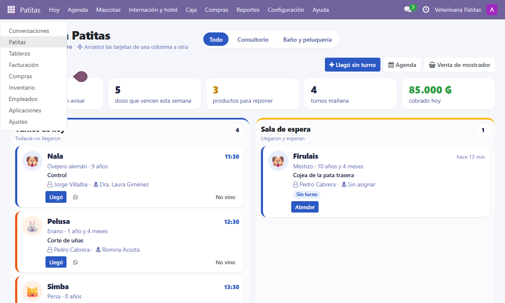
Los menús
| Menú | Para qué sirve |
|---|---|
| Hoy | El tablero del día: la sala de espera, los internados y los avisos. |
| Agenda | Los turnos del consultorio y de baño y peluquería, y la lista de todas las atenciones. |
| Mascotas | Las fichas de las mascotas y de los dueños, las vacunas para avisar y el carnet. |
| Internación y hotel | Quién está adentro ahora, las estadías y las reservas del hotel. |
| Caja | Venta de mostrador y facturas. |
| Compras | Productos para reponer, pedidos a proveedores y mercadería que llega (solo Administración). |
| Reportes | Lo que se hizo y se vendió, y la facturación (solo Administración). |
| Configuración | Servicios, productos, profesionales, horario, lugares, especies y ajustes (solo Administración). |
| Ayuda | Este manual. Arriba a la derecha están los botones para imprimirlo o abrirlo en otra pestaña. |
Quién puede hacer qué
Cada usuario tiene uno de estos dos permisos (se elige en Ajustes › Usuarios, en la línea Patitas):
| Permiso | Puede |
|---|---|
| Personal | Dar turnos, atender, cargar la historia clínica y el carnet, internar y cargar controles, vender, cobrar y mandar avisos. |
| Administración | Todo lo anterior y además: servicios, productos, profesionales, lugares, especies, compras, reportes, ajustes y borrar. |
2Hoy en Patitas
La pantalla de la recepción. Conviene dejarla abierta todo el día: se actualiza sola cada minuto.
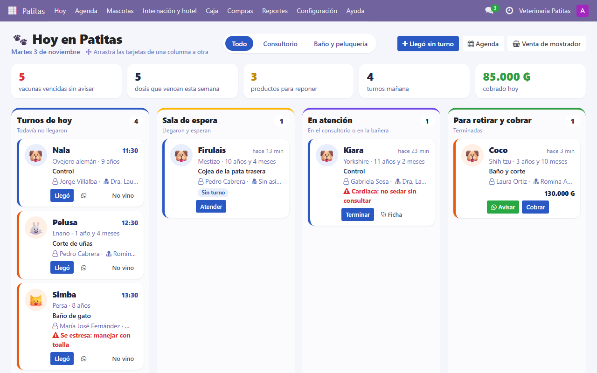
La sala de espera, en cuatro columnas
Cada tarjeta muestra la mascota (con su foto o un dibujo de su especie), la raza y la edad, qué viene a hacerse, el dueño, quién la atiende y, en rojo, sus alertas (por ejemplo "Muerde: usar bozal"). Las que vinieron sin turno tienen la etiqueta Sin turno y las que se pidieron desde la página, Por internet. Tocando la tarjeta se abre la atención completa.
| Botón en la tarjeta | Qué hace |
|---|---|
| Llegó | La pasa a la sala de espera y anota la hora en que llegó. |
| Ícono de WhatsApp | Abre el recordatorio del turno para mandarle al dueño. |
| No vino | La saca de la agenda como ausente. |
| Atender | La pasa a En atención. Si llegó sin turno, la atiende quien toca el botón. |
| Terminar | La deja lista para retirar y anota en el carnet las vacunas que se aplicaron. |
| Avisar | En baño y peluquería: le avisa al dueño que ya puede pasar a buscarla. |
| Cobrar | Abre la caja (ver Cobrar). |
Los números de arriba
Vacunas vencidas sin avisar y dosis que vencen esta semana abren la lista para avisar a los dueños; productos para reponer abre la pantalla de reposición. También muestra los turnos de mañana y lo cobrado hoy. Los botones Todo Consultorio Baño y peluquería filtran el tablero por área, y + Llegó sin turno anota a una mascota que vino sin turno.
Internados y hospedados
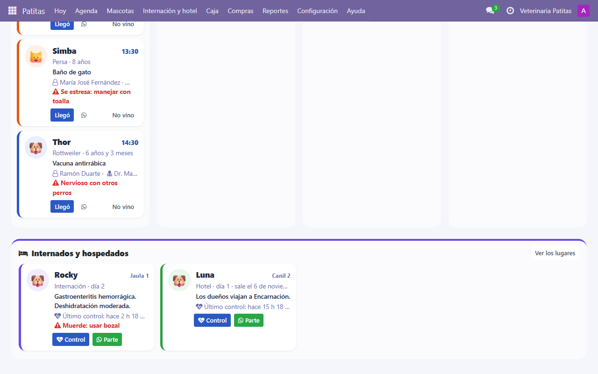
Desde acá se carga un Control o se manda el Parte al dueño. Si un internado pasa más de 8 horas sin control, su tarjeta se pone en rojo (las horas se cambian en los Ajustes). Las reservas del hotel que llegan hoy tienen el botón Llegó.
3Dar un turno
El consultorio y baño y peluquería tienen cada uno su agenda.
- Entrá a Agenda › Consultorio (o Agenda › Baño y peluquería).
- Tocá el día y la hora en el calendario. Se abre el turno nuevo.
- Elegí la mascota (el dueño y su teléfono se completan solos). Si es nueva, escribí su nombre y tocá Crear y editar para cargar la ficha.
- Elegí quién la atiende y escribí el motivo (por ejemplo, "vómitos desde ayer").
- En Lo que se hizo agregá el servicio (consulta, vacuna, baño...). La duración del turno sale de los servicios y se puede cambiar.
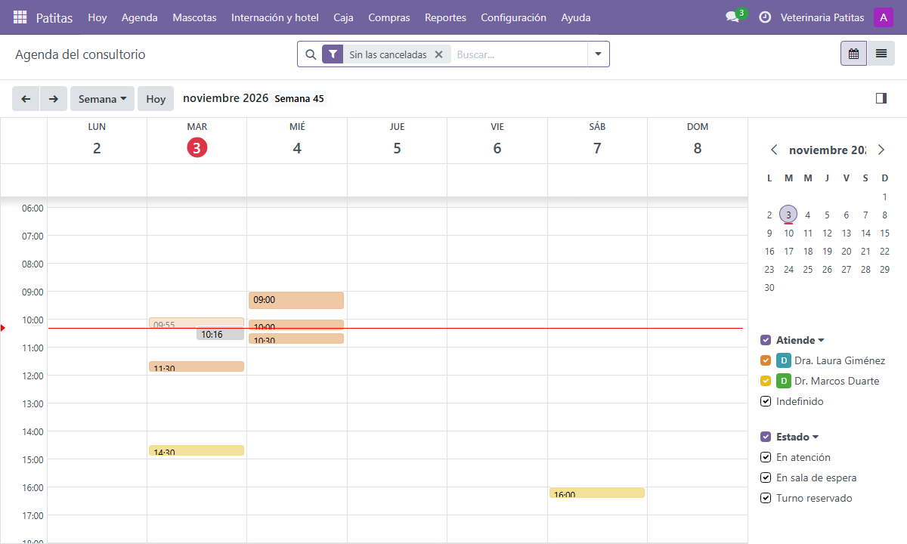
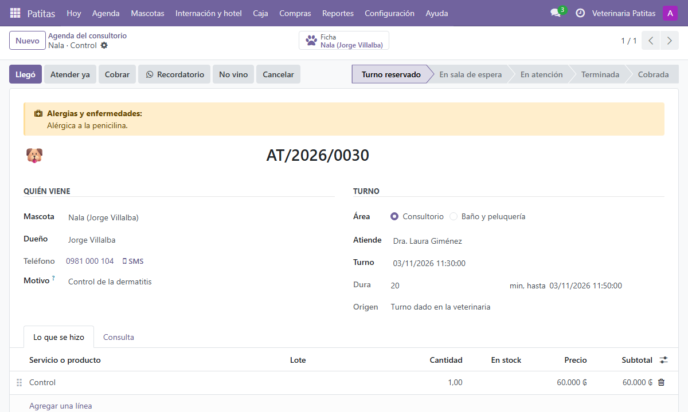
Otras formas de dar un turno
- Desde la ficha de la mascota, con Darle un turno.
- Si llega sin turno: en el tablero, + Llegó sin turno, elegí la mascota y tocá A la sala de espera. No ocupa lugar en la agenda.
- El dueño lo pide solo desde la página de turnos por internet.
El recordatorio del turno
El día antes, a las 10:00, el sistema le manda un correo a los dueños que tienen correo cargado. Para los demás, el botón Recordatorio del turno (o el ícono de WhatsApp en el tablero) abre WhatsApp con el mensaje ya escrito:
Solo falta tocar Enviar en WhatsApp. El mensaje se manda desde el WhatsApp que esté abierto en esa computadora (WhatsApp Web o de escritorio).
4Recibir y atender
Cada atención pasa por estos pasos: Turno reservado → En sala de espera → En atención → Terminada → Cobrada. Se ven arriba a la derecha y en las columnas del tablero.
- Cuando llega, tocá Llegó. Queda en la sala de espera con la hora de llegada.
- Cuando pasa al consultorio, Atender. Si no tenía profesional, queda a nombre de quien tocó el botón.
- Durante la consulta, cargá lo que se hizo y la historia clínica (abajo).
- Al final, Terminar. Las vacunas y antiparasitarios que se aplicaron quedan anotados en el carnet.
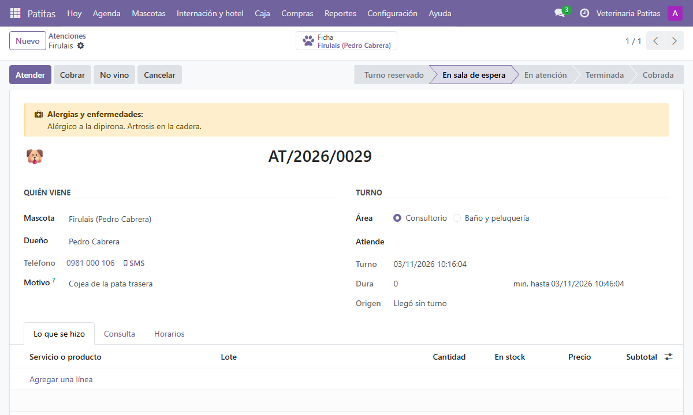
Lo que se hizo
En la pestaña Lo que se hizo van los servicios y productos: la consulta, la vacuna, el remedio que se llevó. En las vacunas escribí el lote, que queda en el carnet. La columna En stock avisa si falta algún producto.
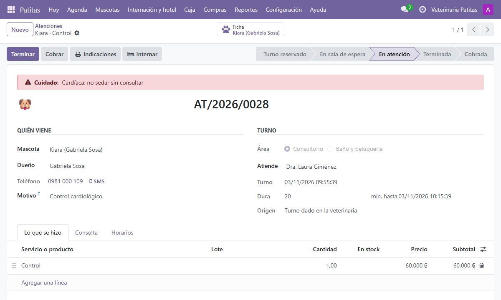
La historia clínica
La pestaña Consulta tiene lo que cuenta el dueño, los signos (peso, temperatura, frecuencias, condición corporal), el examen físico, el diagnóstico, el tratamiento, las indicaciones para la casa y la fecha del próximo control. El peso que se carga acá va al gráfico de la ficha.
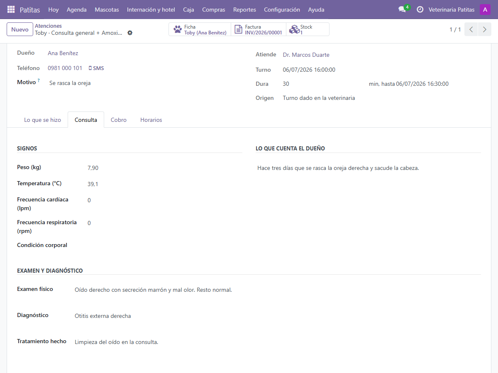
Indicaciones imprime las indicaciones para el dueño, con el diagnóstico, la firma y la matrícula del veterinario:
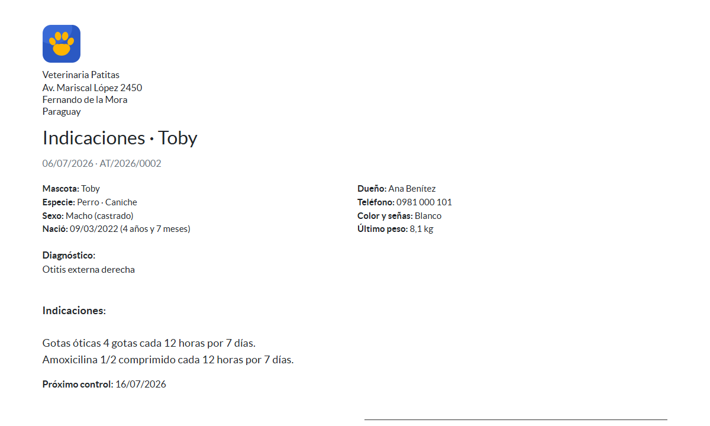
Si no vino o hay que cambiar algo
- No vino: la marca como ausente. Cancelar: el turno se cancela (por ejemplo, si el dueño avisó).
- Atender ya: en un turno reservado, lo pasa directo a atención sin pasar por la sala.
- Reabrir o Volver a reservar: deshace un ausente o una cancelación.
- Internar: si en la consulta se decide internarla (ver Internación).
5Cobrar
Se cobra con factura, en efectivo, con tarjeta, por transferencia o QR, o una parte con cada uno.
- Tocá Cobrar en la atención (o en la tarjeta del tablero).
- Si paga todo de una forma, tocá Todo en efectivo, Todo con tarjeta o Todo por transferencia o QR.
- Si paga una parte con cada una, escribí lo de la tarjeta y lo de la transferencia: el resto queda en efectivo.
- En Entrega en efectivo escribí con cuánto paga: el sistema calcula el vuelto.
- Tocá Cobrar y emitir la factura.
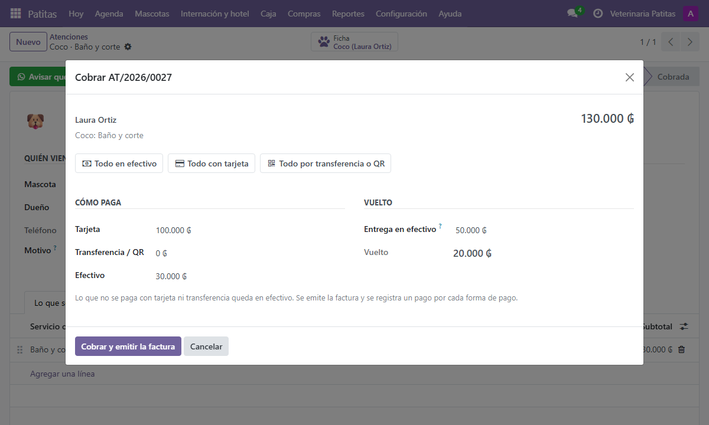
Se emite la factura y se registra un pago por cada forma de pago, cada uno en su caja (efectivo) o banco (tarjeta y transferencia). Los productos con stock se descuentan. La atención queda Cobrada y ya no se puede cambiar; en la pestaña Cobro se ve la factura y cómo pagó.
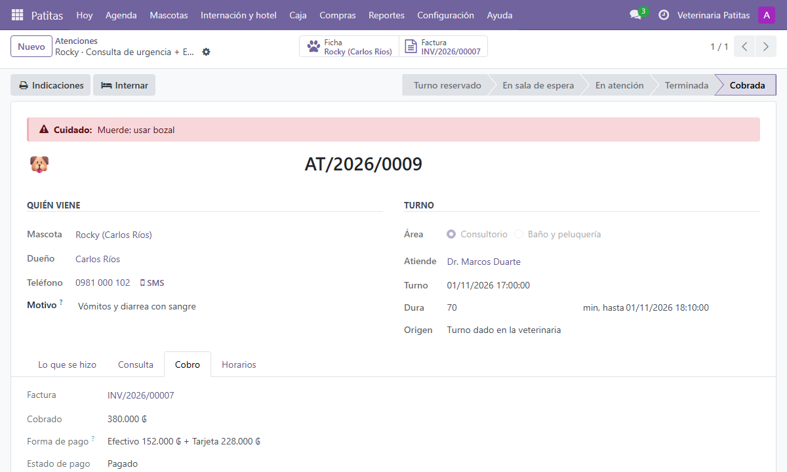
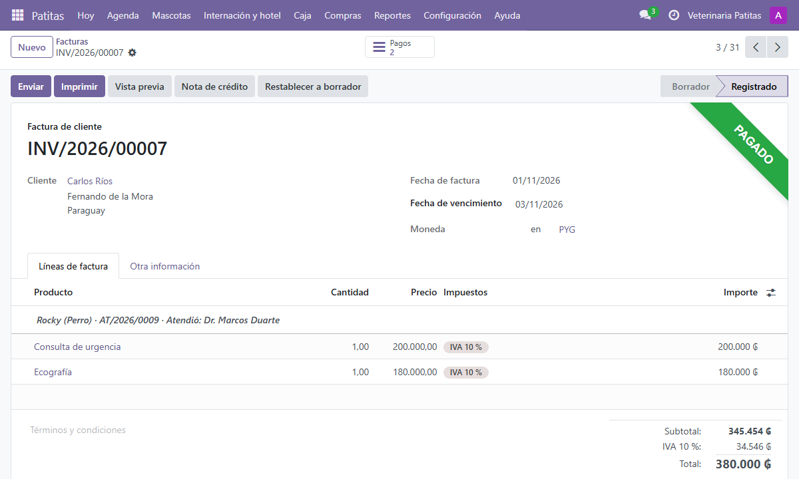
Venta de mostrador
Para vender alimento, pipetas o accesorios sin atender a la mascota: Caja › Venta de mostrador (o el botón Venta de mostrador del tablero) › Nuevo. Elegí el cliente (o dejá Consumidor final), agregá los productos y tocá Cobrar. Se cobra igual que una atención.
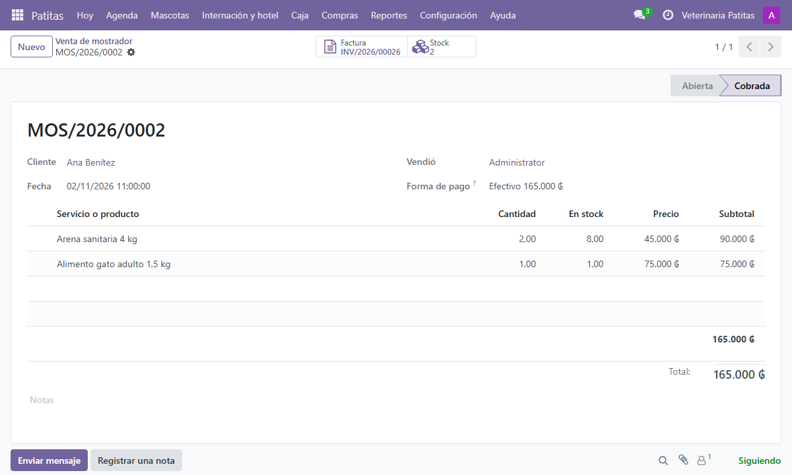
6Mascotas y dueños
Mascotas › Mascotas: todas las mascotas, con su dueño, sus alertas y la próxima vacuna. Las fallecidas no se muestran (se ven quitando el filtro).
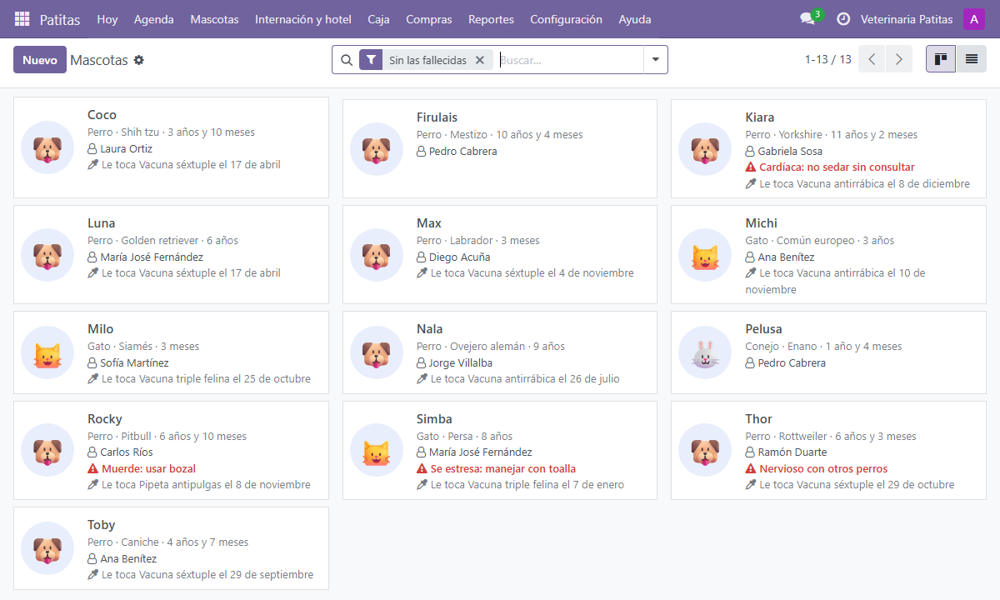
La ficha de la mascota
Tiene el dueño, la especie y la raza, el sexo, si está castrada, la fecha de nacimiento (la edad se calcula sola), el color, el microchip, qué come y la foto. Dos campos importantes:
- Cuidado: una alerta corta que se ve en rojo en todo el sistema ("Muerde, usar bozal").
- Alergias y enfermedades (en su pestaña): sale en amarillo en cada atención.
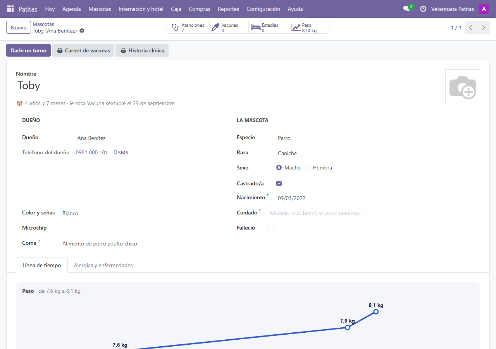
En la pestaña Línea de tiempo está todo lo que se le hizo, del más nuevo al más viejo, con el gráfico de su peso. Los botones Consultas, Vacunas, Peluquería e Internaciones filtran la línea.
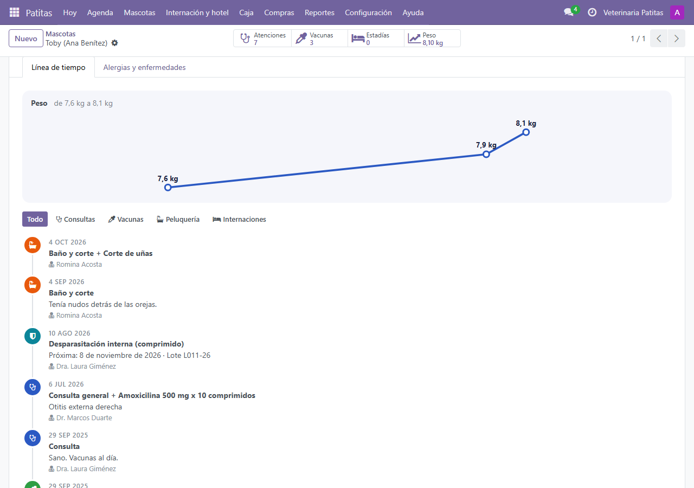
Carnet de vacunas e Historia clínica imprimen esos documentos para darle al dueño. Si la mascota murió, marcá Falleció: deja de recibir avisos.
Los dueños
Mascotas › Dueños. En la ficha de cada dueño, la pestaña Mascotas muestra todas las suyas. Cargá el celular (para WhatsApp) y el correo (para los avisos automáticos).
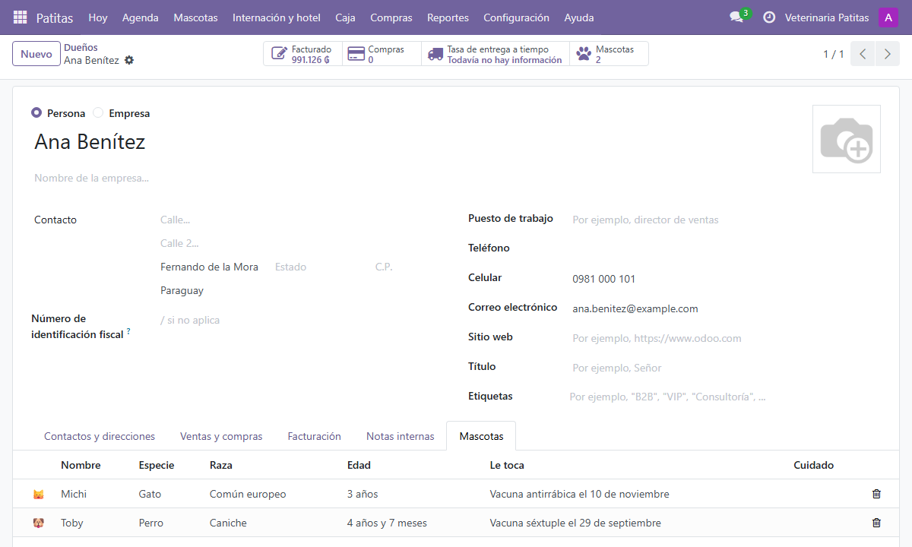
7Vacunas y desparasitaciones
El carnet se arma solo: no hay que cargar las vacunas aparte.
- En la atención, agregá la vacuna o el antiparasitario en Lo que se hizo, con su lote.
- Al Terminar queda anotado en el carnet, con la fecha, el lote, quién la aplicó y la próxima dosis, que se calcula con los días que tiene cargado el producto (por ejemplo, la antirrábica a los 365 días).
- La próxima dosis se puede corregir a mano en la pestaña Carnet de la atención (los cachorros, por ejemplo, cada tres semanas).
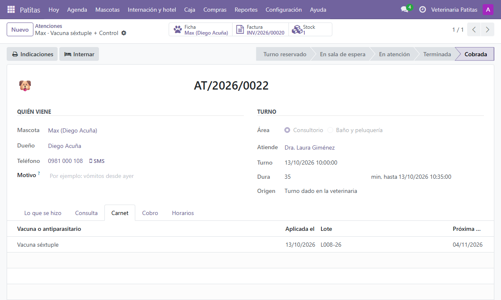
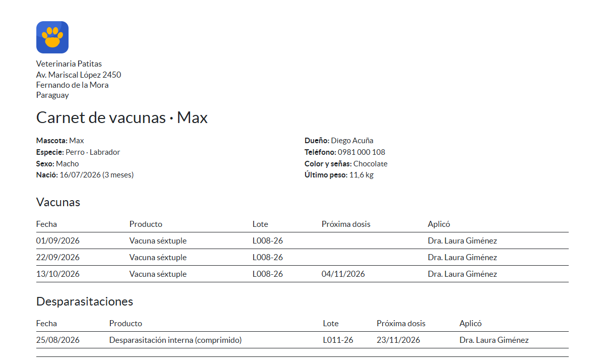
Avisar a los dueños
Mascotas › Vacunas para avisar junta las dosis que ya vencieron o vencen en los próximos 30 días y que todavía no se avisaron. En rojo, las vencidas; en amarillo, las que vencen pronto.
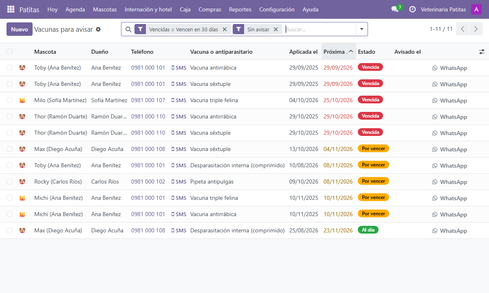
El botón WhatsApp arma un solo mensaje por dueño con todas las dosis de todas sus mascotas, y las marca como avisadas:
• Toby: Vacuna antirrábica, que le tocaba el 29 de septiembre (ya está vencida).
• Toby: Vacuna séxtuple, que le tocaba el 29 de septiembre (ya está vencida).
• Toby: Desparasitación interna (comprimido), el domingo 8 de noviembre.
• Michi: Vacuna triple felina, el martes 10 de noviembre.
• Michi: Vacuna antirrábica, el martes 10 de noviembre.
Podés reservar el turno en http://patitas.localhost:8073/reservar o respondernos por acá.
Además, unos días antes de cada dosis (7, se cambia en los Ajustes) le llega un correo a los dueños que tienen correo cargado. Si un dueño no quiere más avisos de una dosis, marcala No avisar más. Cuando se aplica una dosis nueva del mismo producto, la anterior deja de avisarse.
8Baño y peluquería
Funciona igual que el consultorio, con su propia agenda en Agenda › Baño y peluquería.
En la atención, la pestaña Peluquería tiene Qué pidió el dueño ("corte cortito") y Lo que encontramos (pulgas, nudos, garrapatas). Al terminar, el botón Avisar que está lista le escribe al dueño:
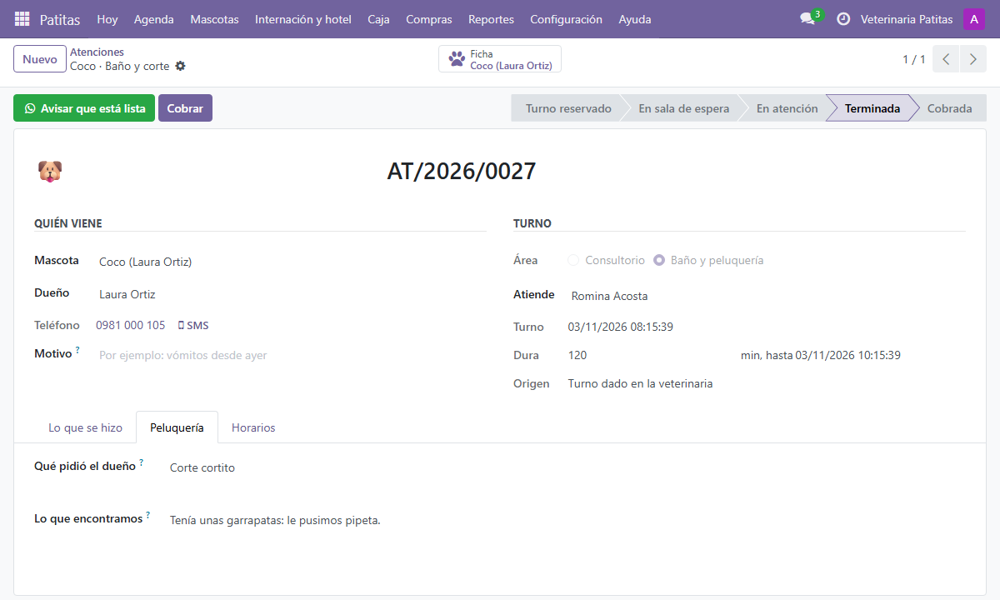
Cuando lo vienen a buscar, se cobra con Cobrar, como siempre.
9Internación y hotel
Las mascotas que se quedan: internadas por un tratamiento o en el hotel mientras los dueños viajan. Cada una ocupa un lugar (jaula, canil, gatera) y se cobra por día.
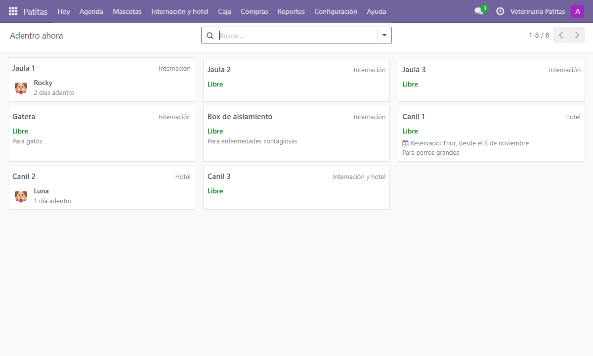
Internar desde una consulta
- En la consulta, tocá Internar. Se crea la estadía con la mascota, el dueño y el veterinario.
- Elegí el lugar y completá en Indicaciones el motivo, el plan, la alimentación y las pertenencias que dejó.
- Constancia de ingreso imprime la hoja para que firme el dueño.
Reservar el hotel
Internación y hotel › Estadías y reservas › Nuevo, tipo Hotel / guardería, con la fecha de entrada y la salida prevista. Queda Reservada (las reservas del mismo lugar no se pisan). El día que llega, Llegó.
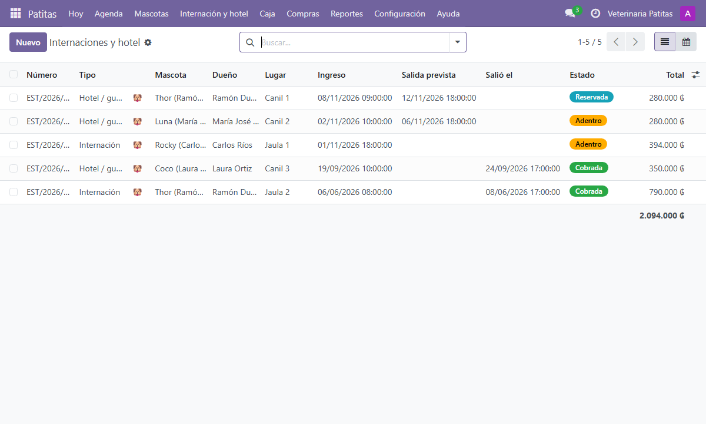
Los controles y el parte al dueño
Nuevo control (en la estadía o en el tablero) anota la temperatura, el peso, la frecuencia cardíaca, el ánimo, si comió, orinó y defecó, la medicación que se le dio y las observaciones.
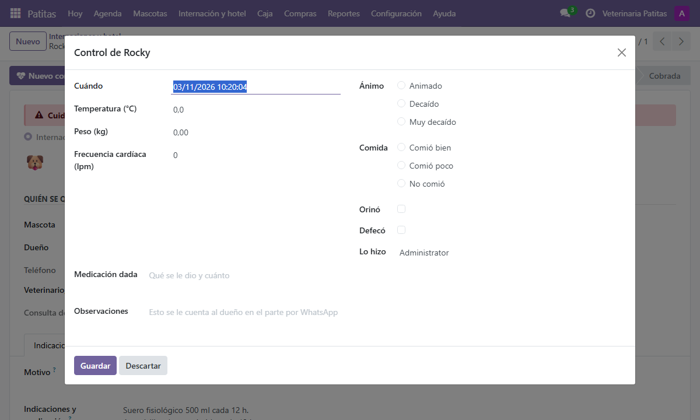
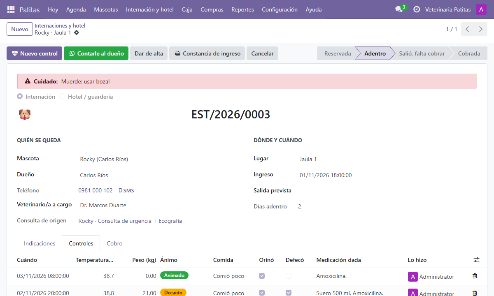
Contarle al dueño (o Parte en el tablero) le manda el último control por WhatsApp:
El alta y el cobro
- Dar de alta cuando se va. Queda Salió, falta cobrar y el lugar se libera.
- En la pestaña Cobro se ve el precio por día y los días a cobrar (del día de ingreso al de salida, como mínimo uno), que se pueden corregir. Los remedios y extras se agregan abajo, en Medicación y extras.
- Cobrar, igual que una atención.
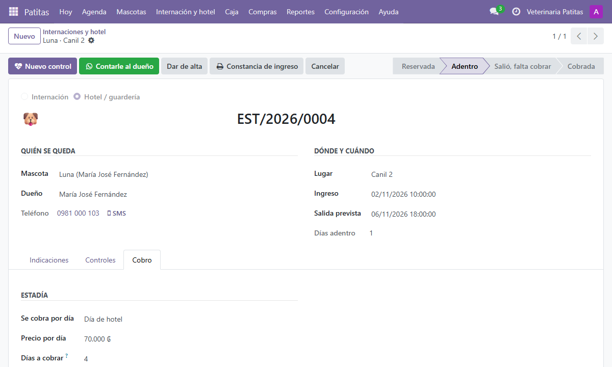
10Stock y compras
Solo Administración. Los productos con stock se descuentan solos al cobrar; acá se repone.
Qué hay que pedir
Compras › Para reponer muestra los productos con su stock, el mínimo y el máximo ("pedir hasta"). Los que bajaron del mínimo tienen cantidad Por ordenar y el botón Orden, que arma el pedido al proveedor.
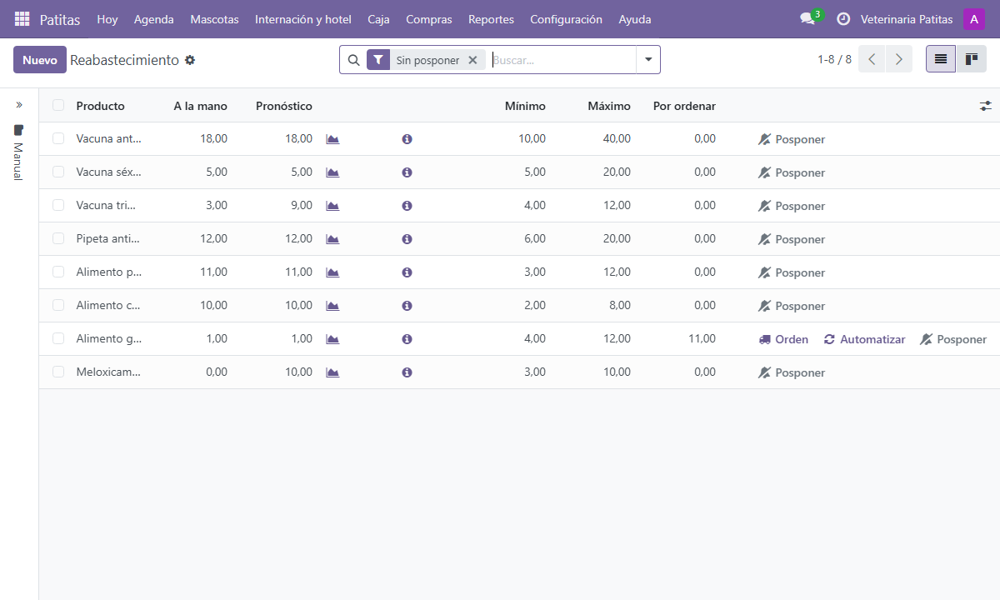
El pedido y la mercadería que llega
- Compras › Pedidos a proveedores: revisá el pedido y tocá Confirmar pedido.
- Cuando llega la mercadería: Recibir productos en el pedido (o Compras › Mercadería que llega), corregí las cantidades si vino distinto y Validar. El stock sube.
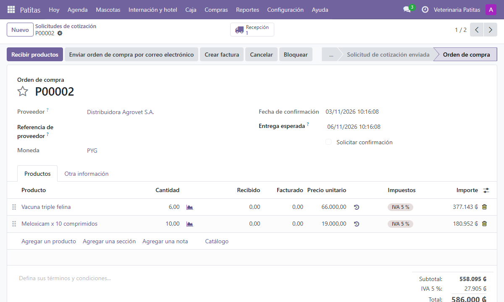
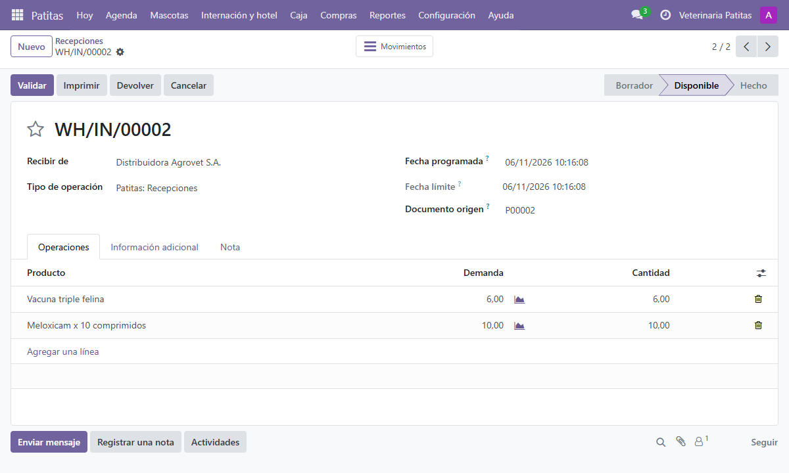
Compras › Productos con stock lista todo lo que se vende con su stock actual. El mínimo y el "pedir hasta" de cada producto se cargan en su ficha (ver Configuración).
11Turnos por internet
Una página que funciona como un chat: el dueño pide el turno desde el celular, a cualquier hora.
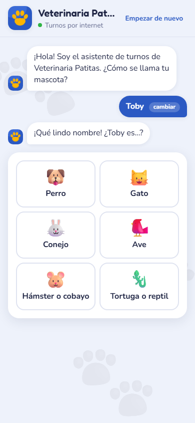
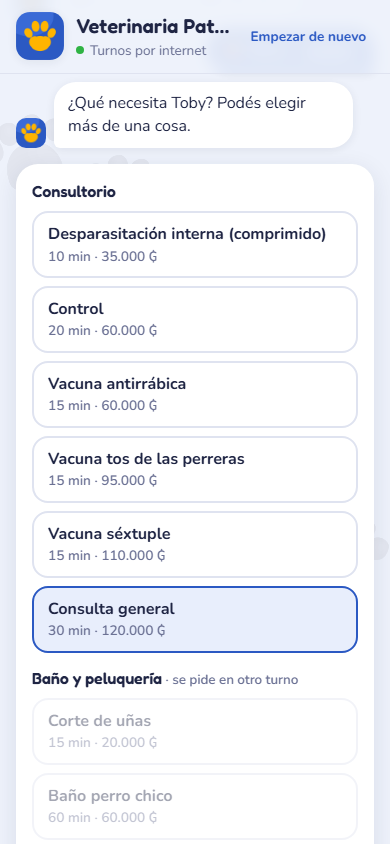
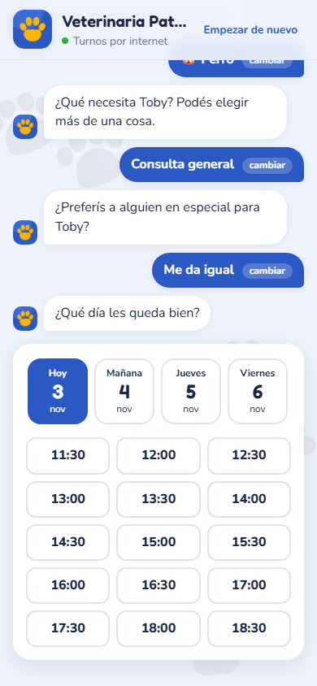
Después deja su nombre y su celular, confirma, y el turno entra a la agenda con la etiqueta Por internet. Si el dueño o la mascota ya existen, el sistema los reconoce por el celular y el nombre; si no, los crea. Al final, la página le muestra el turno confirmado y un botón para avisarle a la veterinaria por WhatsApp.
| Regla | |
|---|---|
| Horarios | Cada 30 minutos, dentro del horario de cada profesional, con al menos una hora de anticipación y hasta 14 días adelante. |
| Servicios | Solo los marcados Se reserva por internet, y de una sola área por turno. |
| Límite | Hasta 3 turnos pendientes por dueño. |
12Reportes
Solo Administración.
Reportes › Atenciones: lo que se hizo y se vendió en las atenciones cobradas. Se puede ver por mes, área, profesional, especie o producto, en tabla o en gráfico (botones arriba a la derecha). Con Medidas se elige qué sumar.
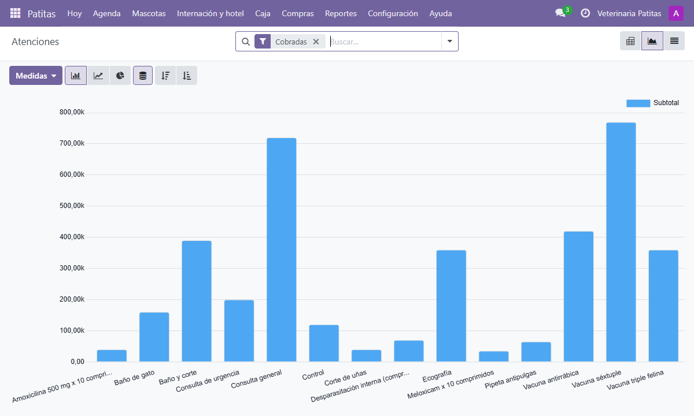
Reportes › Facturación es el análisis de facturas de Odoo: todo lo facturado, también las ventas de mostrador y las internaciones.
13Configuración
Solo Administración. Se hace una vez al empezar y cuando algo cambia.
Servicios y productos
Configuración › Servicios y productos. En cada uno, el precio de venta (con el IVA incluido) y la pestaña Patitas:
| Campo | Para qué |
|---|---|
| Se usa en | Consultorio, baño y peluquería o internación: en qué agenda aparece. |
| Duración del turno | Los minutos que ocupa en la agenda. |
| Se reserva por internet / Para | Si aparece en la página de turnos y para qué especies. |
| Es una | Vacuna o antiparasitario: entonces va al carnet. |
| Próxima dosis a los (días) | Cuándo toca la siguiente. |
| Stock mínimo / Pedir hasta | Cuándo aparece en Para reponer y cuánto pedir. |
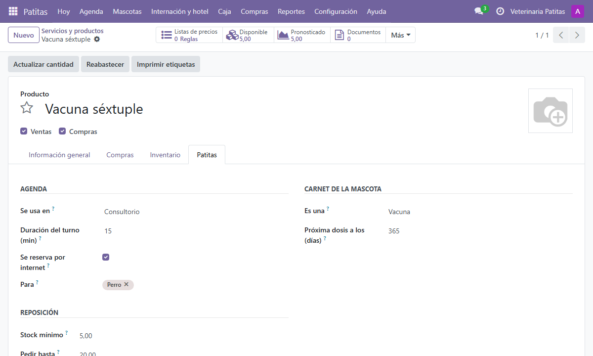
Profesionales
Configuración › Profesionales: los veterinarios y peluqueros. En la pestaña Patitas: en qué área atiende, su matrícula (sale en las indicaciones) y, si querés limitarlo, los servicios que hace. Su horario de trabajo está en la pestaña Información de trabajo.
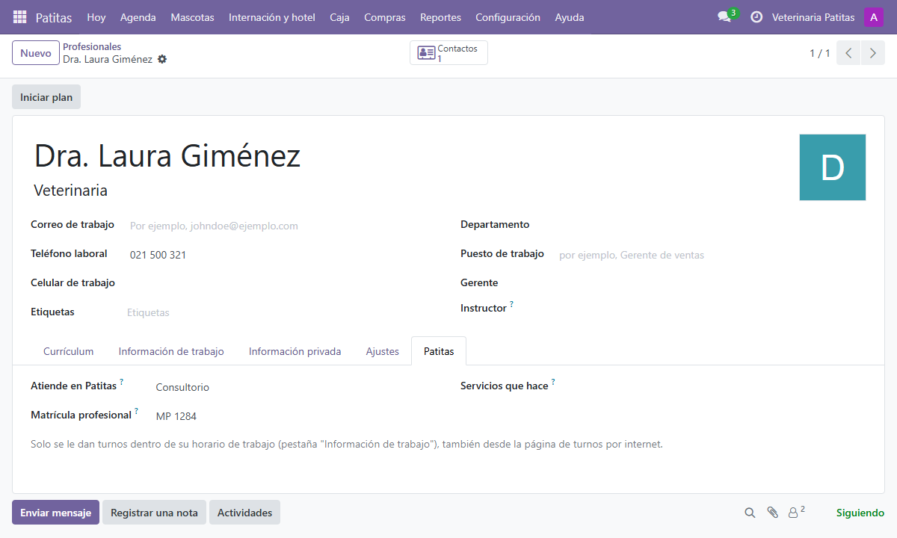
Horario, lugares y especies
- Configuración › Horario de atención: los días y horas de la veterinaria. Los turnos (también los de internet) solo se dan dentro del horario de cada profesional.
- Configuración › Lugares de internación y hotel: las jaulas, caniles y gateras, y para qué se usa cada uno.
- Configuración › Especies y razas: las especies que se atienden (con su dibujo) y sus razas.
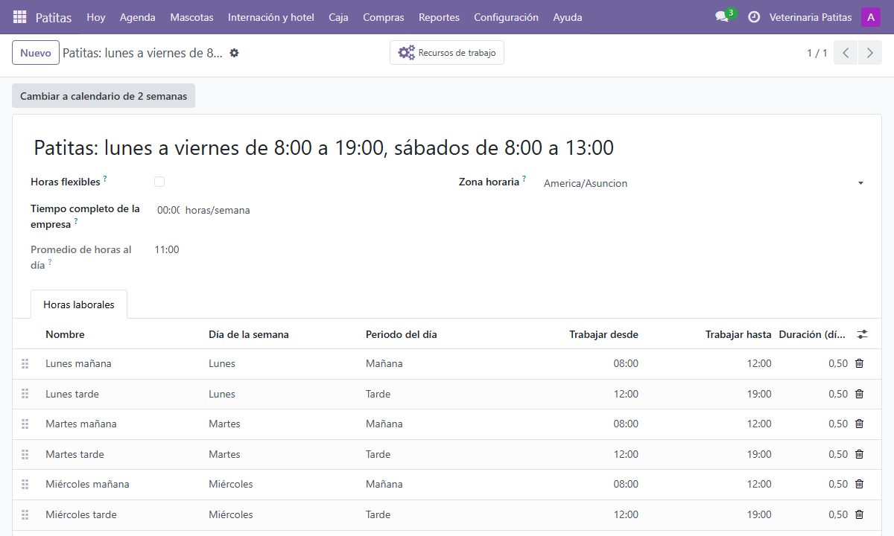
Ajustes
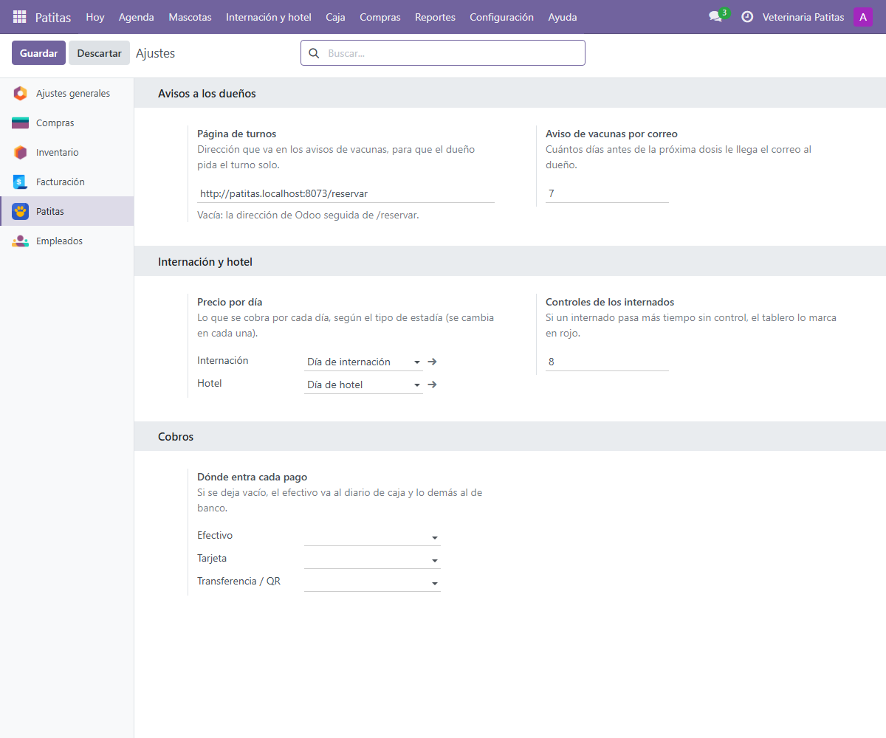
| Ajuste | Para qué |
|---|---|
| Página de turnos | La dirección que va en los avisos de vacunas. |
| Aviso de vacunas por correo | Cuántos días antes de la dosis llega el correo. |
| Precio por día | El producto que se cobra por cada día de internación y de hotel. |
| Controles de los internados | Después de cuántas horas sin control el tablero lo marca en rojo. |
| Dónde entra cada pago | La caja o el banco de cada forma de pago. |
El nombre, el logo, la dirección y el teléfono de la veterinaria (que salen en las facturas, el carnet y la página de turnos) se cambian en Ajustes › Usuarios y compañías › Compañías.
14Preguntas frecuentes
Toqué un botón por error en el tablero. ¿Cómo lo deshago?
Arrastrá la tarjeta a la columna anterior. Si ya estaba terminada, lo que se anotó en el carnet se borra y se vuelve a anotar cuando termine de nuevo. Una atención cobrada ya no se puede volver atrás.
¿Por qué no me deja dar un turno a esa hora?
Porque el profesional ya tiene otro turno, no trabaja a esa hora, o no atiende en esa área o ese servicio. Probá con otro profesional o dejalo vacío para el consultorio.
El WhatsApp no se abre.
El dueño tiene que tener el celular cargado en su ficha. El mensaje se abre en WhatsApp Web o en WhatsApp de escritorio: tiene que estar iniciado en esa computadora. Patitas no manda mensajes solo: siempre falta tocar Enviar.
¿Cómo corrijo una factura ya emitida?
Abrila desde el botón Factura de la atención y hacé una Nota de crédito. Una atención cobrada no se modifica.
Una vacuna no apareció en el carnet.
El producto tiene que estar marcado como vacuna o antiparasitario en su pestaña Patitas, y la atención tiene que estar terminada o cobrada.
¿Puedo usar Patitas desde el celular?
Sí, desde el navegador del celular o la tableta. El tablero se acomoda a la pantalla y las tarjetas se arrastran con el dedo.
Patitas · sistema para veterinarias sobre Odoo 18